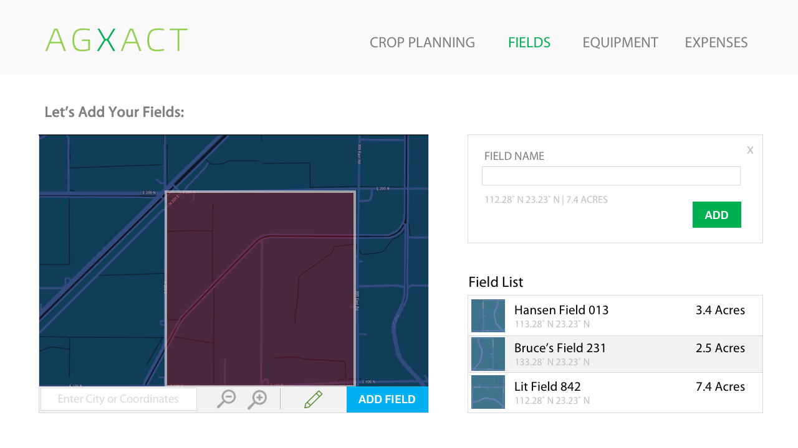

The Welcome Screen
Instructions for Adding Fields
Adding Fields

Dashboard - Row Variant
Dashboard - Card Variant
Crop Search
Crop Planning - Map View
Crop Planning - Variant
Crop Planning - Variant 2
Crop Management
Crop Planning - Single Field Timeline
Expense Report
Soil Report
Rough version of overall farm metrics dashboard